Маркетплейс туров, где путешественник решает без переписки, а гид продаёт без менеджера
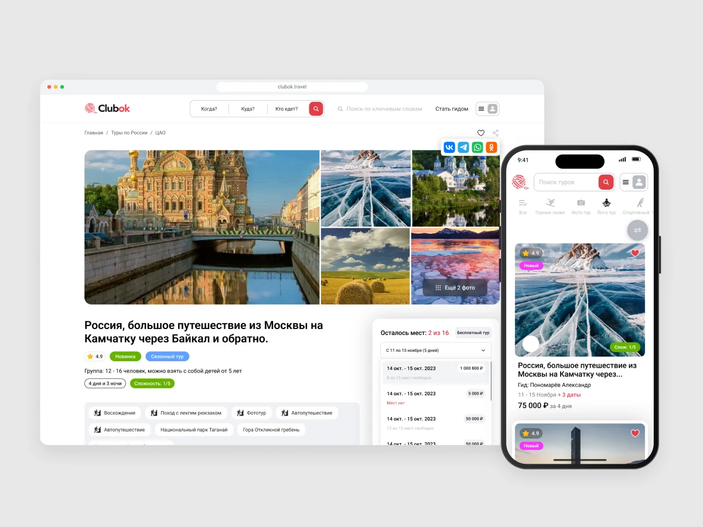
Клубок — travel-tech платформа, где путешественники находят и бронируют авторские туры по России и миру, а гиды и турагентства создают, продают и ведут их в одном кабинете. Я спроектировал сервис с нуля: анализ рынка, архитектуру ролей, сценарии, UI для desktop и mobile, дизайн-систему и email-коммуникации.
- Платформа
- Web: desktop и mobile
- Роль
- Product Designer: исследование, UX-архитектура, UI, дизайн-система, письма, handoff
- Роли
- Путешественник, гид, компания, модератор
- Объём
- 257 экранов: 161 desktop и 96 mobile
- Статус
- В продакшене — clubok.travel
Внутренний туризм в России растёт — в 2024 году рекордные 92–96 млн поездок, и спрос смещается к небольшим группам и авторским маршрутам. При этом организаторы авторских туров продают через мессенджеры, соцсети и таблицы.
Путешественник не доверяет незнакомому организатору, не понимает, что входит в цену и что будет при отмене. Гиды и компании ведут туры вручную, не могут раздать даты сотрудникам и тратят время на реквизиты.
Спроектировать маркетплейс, в котором путешественник решает без переписки с организатором, а гид или компания проходят путь от регистрации до продаж без менеджера платформы.
Сравнил YouTravel.me, Tripster, Sputnik8, «Большую Страну» и «Клуб Гидов». Сильные игроки есть, но каждый закрывает только часть задачи — ниша Клубка в командах гидов, видимом доверии и повторных продажах.
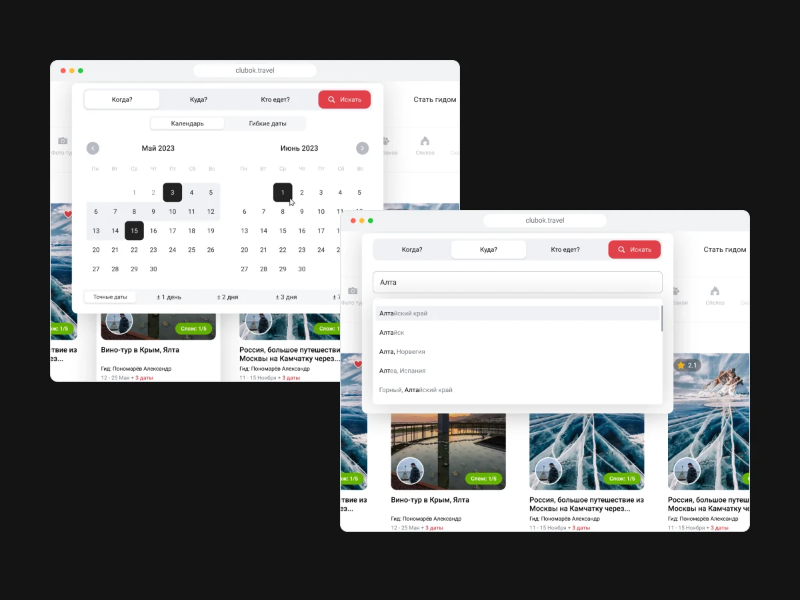
Поиск из трёх вопросов. «Когда? Куда? Кто едет?» вместо стены фильтров: календарь на два месяца с гибкими датами, автоподсказки по регионам и состав группы — взрослые, дети и питомцы. Под шапкой — лента из 27 типов активностей.
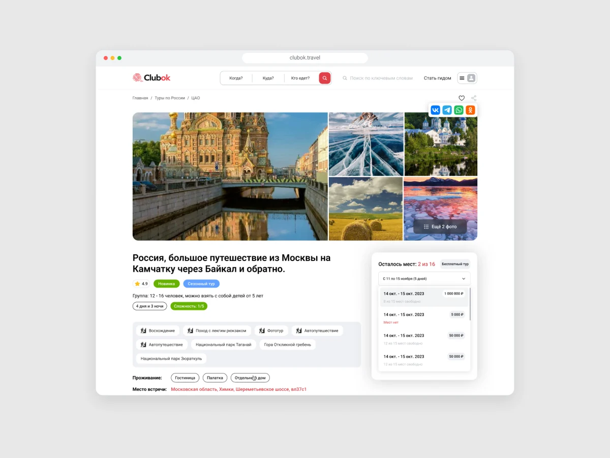
Страница тура без скрытых условий. Рейтинг, сложность, размер группы и возраст детей — в шапке, даты и остаток мест — в виджете справа. Ниже маршрут на карте, программа по дням, что входит в цену и что взять с собой.
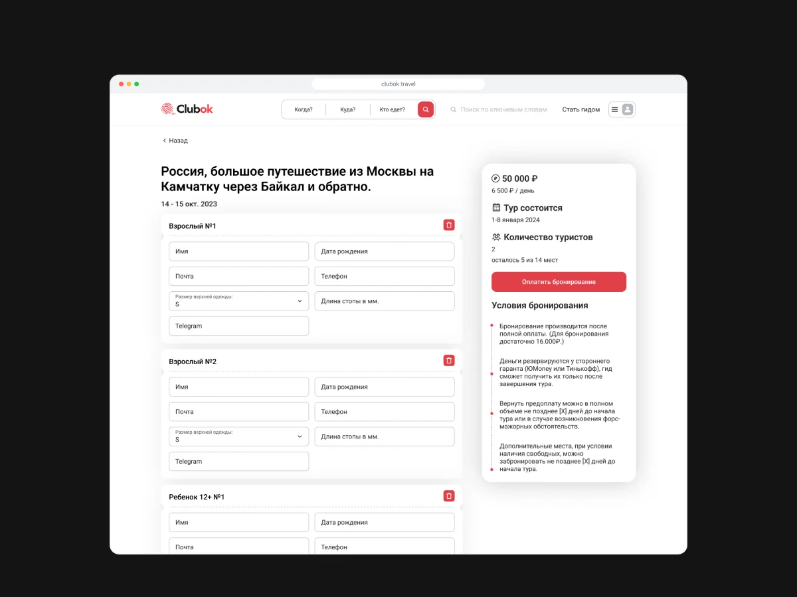
Цена считается сразу. Анкета на каждого участника, расчёт по взрослым и детским тарифам, предоплата 30% или 100% — а условия бронирования и отмены стоят рядом с кнопкой оплаты, а не в оферте.
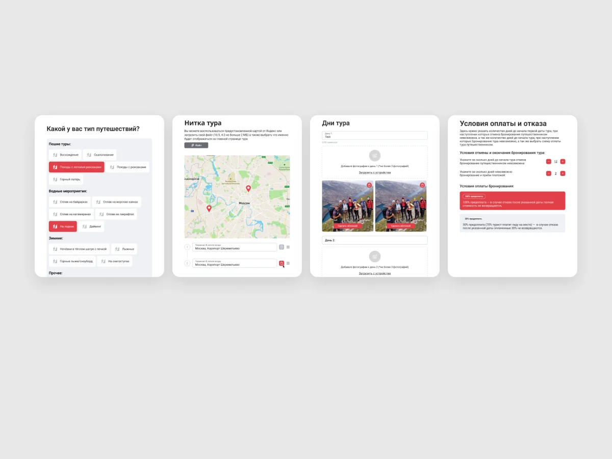
Мастер создания тура. Авторский тур — это десятки параметров, и одна длинная форма такой объём не выдержит. 22 шага в 3 этапах — параметры, контент, продажи — по одному вопросу на экран, с черновиком «Сохранить и выйти» и подсказками на каждом шаге.
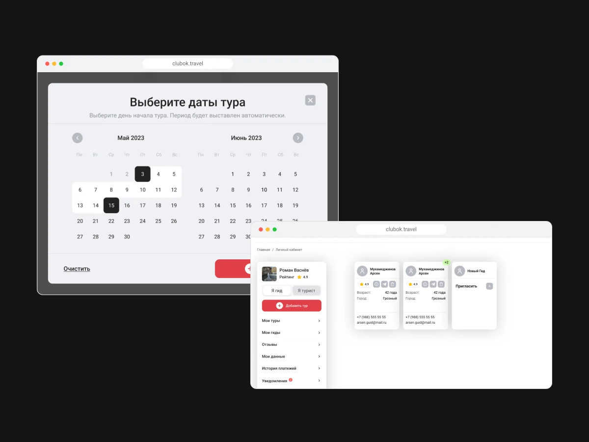
Даты, гиды и цены. Период выбирается одним кликом, на каждую дату назначается основной и дополнительный гид — из команды или по приглашению на email, у каждой даты своя цена и количество мест.
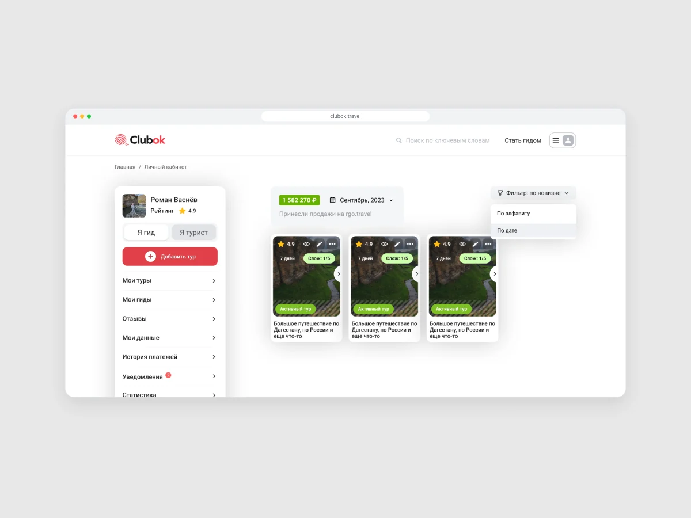
Кабинет с двумя ролями. Переключатель «Я гид / Я турист» меняет меню, и путешественник становится гидом без второй регистрации. Карточки туров со статусами, выручка за месяц и сортировка.
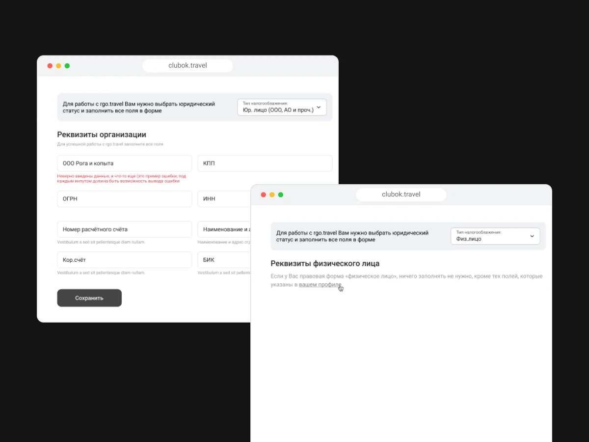
Реквизиты по статусу. ООО, ИП, физлицо и иностранный гражданин — у каждого своя анкета только с нужными полями. Кабинет подсказывает выбрать статус ещё до первого тура.
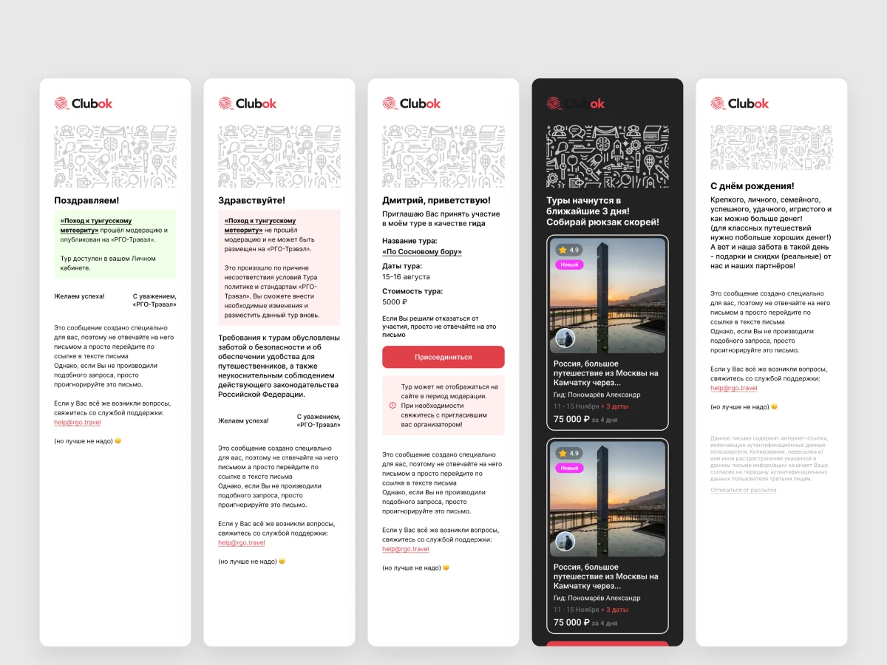
Продукт пишет сам. Каждый статус тура и брони порождает уведомление в кабинете и письмо: модерация, приглашение гидом, горящие туры, день рождения. 11 сценариев в 28 макетах работают как CRM, которой у организаторов обычно нет.
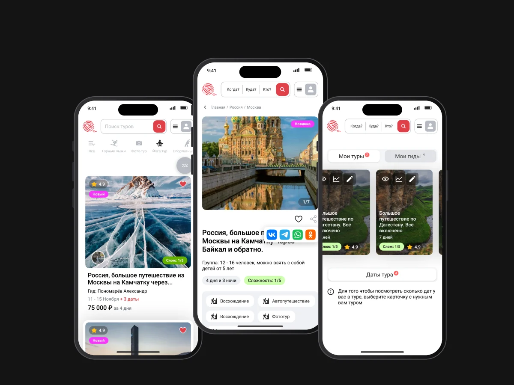
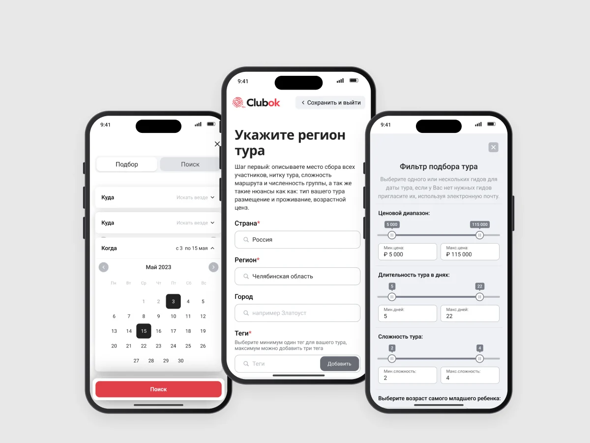
96 мобильных экранов. Не урезанная копия desktop: поиск, тур, покупка, кабинет и мастер создания тура спроектированы под одну руку. Вкладки поиска становятся аккордеоном, а фильтр — полноэкранной формой.
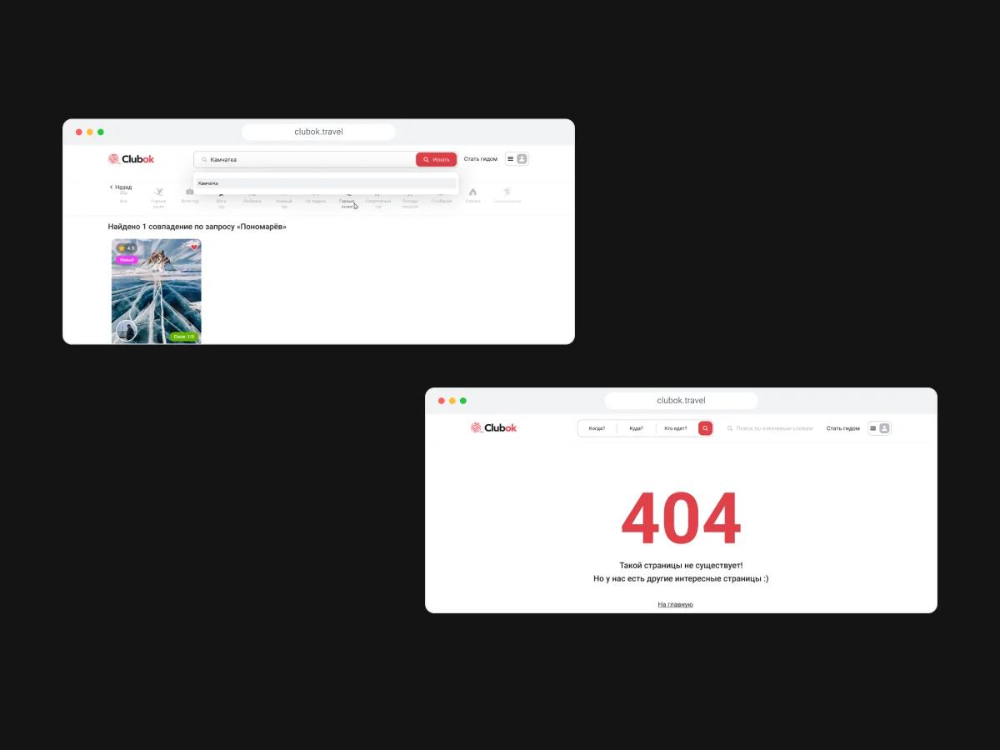
Без тупиков. Пустой поиск подсказывает, что изменить в запросе, истёкшая ссылка — отправить письмо ещё раз, 404 — вернуться на главную.
Результаты
Клубок запущен и работает на clubok.travel: путешественники бронируют туры, гиды и компании ведут их в кабинете. Организатор проходит путь от регистрации до продаж сам, без менеджера платформы. Система держится на 68 наборах компонентов.
Дальше я бы измерял конверсию страницы тура в бронь, долю туров, прошедших модерацию с первого раза, и время создания тура в мастере.
Выводы
Продуктовый дизайн собрал двусторонний рынок в одну систему. Путешественнику продукт отвечает на вопросы до того, как их зададут, а гиду даёт инструмент вместо мессенджеров и таблиц. Поиск, тур, бронь, кабинет, модерация и письма опираются на одни статусы и компоненты — поэтому продукт масштабируется без переписывания.
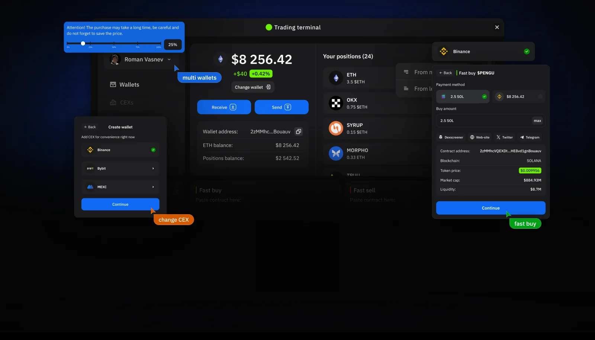
Следующий проект